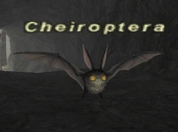

Level 75 reference · Zenith rules
|
Job: |
 |

|
Zone |
Level |
Drops |
Steal |
Spawns |
Notes |
|
3-6 |
|
21 |
A, H | ||
|
8-10 |
20 |
A, H | |||
|
HP = Detects Low HP; M = Detects Magic; Sc = Follows by Scent; T(S) = True-sight; T(H) = True-hearing JA = Detects job abilities; WS = Detects weaponskills; Z(D) = Asleep in Daytime; Z(N) = Asleep at Nighttime | |||||
Adapted from Eden Wiki: Cheiroptera · Contributors and history · CC BY-SA 4.0. Revision 46692. Layout, links and optional background text adapted for Zenith.